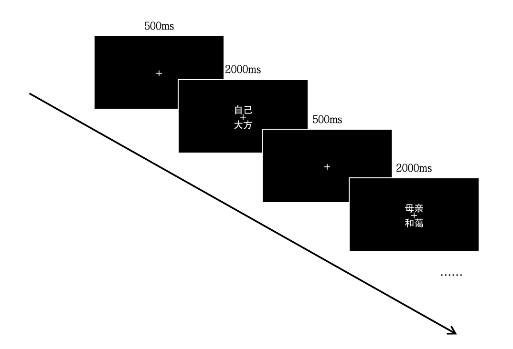
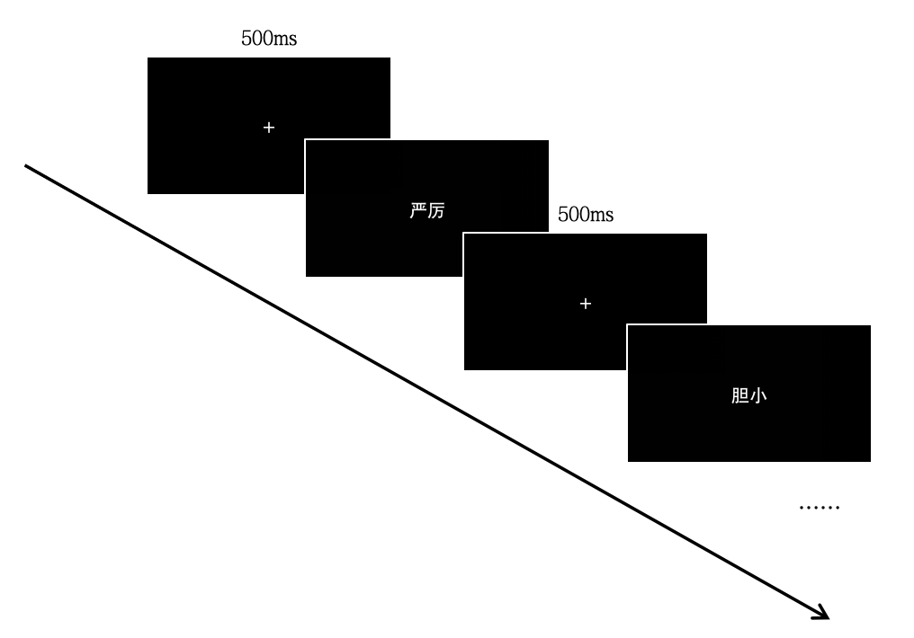
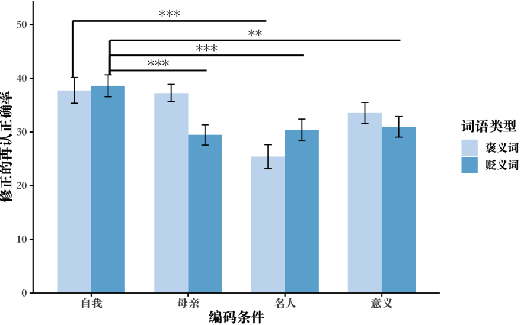
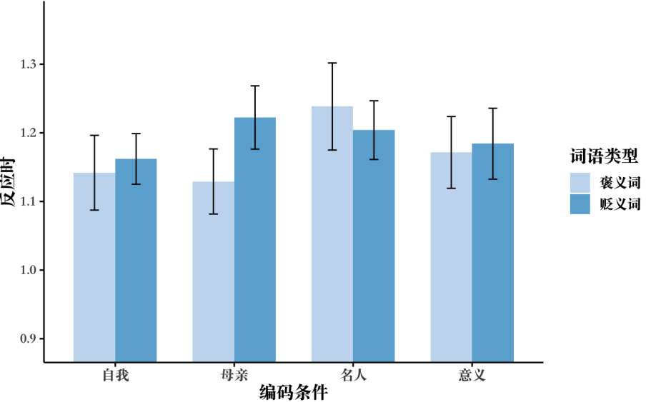

编码条件和词语类型对再认记忆效果的影响
摘要
自我参照效应指记忆材料与自我相关时的记忆效果显著优于其他编码条件。本实验基于 Rogers（1977）自我参照实验范式，采用 4（编码条件：自我参照、母亲参照、名人参照、意义编码）×2（词语类型：褒义、贬义）双因素组内设计，探讨编码条件和词语类型对再认记忆正确率及反应时的影响。结果显示，褒义词条件下自我参照组与母亲参照组再认正确率接近，均显著高于名人参照组和意义编码组；贬义词条件下自我参照组显著高于其他组。反应时分析未发现显著差异。研究表明自我参照效应主要体现在记忆准确性上，并部分支持东方文化背景下母亲参照接近自我参照的假设，同时提示自我概念可能随文化背景和时代发展发生动态重构。
关键词 自我参照效应 再认记忆 编码条件 自我概念
1 前言
自我参照效应（self-reference effect, SRE）是指当记忆材料与自我相联系时，记忆效果优于其他编码条件的现象。该现象的研究可追溯到 Craik 和 Tulving（1975）提出的深度加工理论（depth of processing, DOP），该理论认为记忆保持取决于刺激在编码时的加工深度：语义加工优于音韵加工，音韵加工优于结构加工。Rogers 等人（1977）在此基础上将“自我”引入加工范式，设置结构、音韵、语义和自我参照四种编码任务，发现自我参照加工的记忆效果显著优于其他编码条件，甚至超过了 DOP 范式中表现最佳的语义加工，由此提出“自我参照效应”这一概念。
此后，SRE 成为记忆研究的重要课题，研究者不断扩展该范式。例如，Bower 和 Gilligan（1979）引入他人参照（other-reference, OR）条件，要求被试判断词汇是否适用于描述母亲或名人，以探讨记忆效果是否仅限于与自我相关的加工。研究表明，他人参照通常产生较弱的记忆优势，但在某些文化情境下，母亲参照与自我参照的记忆效果高度相似（朱潮，张力，2001）。这一结果与 Markus 和 Kitayama（1991）提出的文化自我建构理论一致：在东方文化中，自我概念更强调人与社会的相互依存，母亲等亲密他人往往被纳入自我表征之中。fMRI 研究进一步验证了母亲参照和自我参照在中国被试中引发相似的内侧额叶激活模式（张力 等，2005）。
然而，关于母亲参照是否等同于自我参照，现有研究结论并不完全一致。虽然朱潮和张力（2001）在中国被试中发现二者记忆效应几乎相同，但随着社会现代化与独立自我意识的增强，母亲参照与自我参照之间的差异可能逐渐显现。因此，有必要在严格控制材料和程序的前提下，采用更新的样本和均衡的刺激集，重新检验编码条件和词语类型对再认记忆的影响，以验证母亲参照效应在当代青年样本中的稳定性。
基于上述局限，本实验在经典 SRE 范式基础上引入母亲参照与名人参照两种他人参照条件，综合考察不同编码条件下的再认正确率与反应时，以期更系统地比较自我参照与他人参照的记忆效果，并探索文化自我建构在其中的可能调节作用。实验预期结果为：（1）自我参照编码的再认正确率和母亲参照的不存在显著差异，但显著高于另外两种参照条件；（2）褒义词的记忆效果优于贬义词；（3）编码条件和词语类型的交互作用显著。
2 方法和设计
2.1 被试
本实验共招募54名被试，其中男性26名，女性28名，年龄范围18到24岁（M = 19.45，SD = 1.18）。所有被试均为北京大学学生，视力或矫正视力正常。本实验为课堂教学实验，所有被试获得相应学分作为报酬。
2.2 材料和仪器
实验配有统一型号的台式电脑以及统一的键盘，供被试进行按键反应。电脑的基本型号参数如下：显示器型号：24英寸 TITAN ARMY 液晶显示器；分辨率：1920×1080；刷新频率：60Hz；操作系统：Windows10。本实验程序基于 MATLAB R2022b 软件完成，程序使用 320 个人格特质形容词作为实验材料，其中学习词汇 160 个（其中褒义、贬义各 80 个），混淆词汇 160 个（其中褒义、贬义各 80 个）。
2.3 实验设计
本实验采用 4（编码条件：自我参照、母亲参照、名人参照、意义编码）×2（词语类型：褒义、贬义）双因素组内设计，因变量为被试的再认正确率，通过修正的再认正确率（Pr = 击中率 − 虚报率）这一指标来衡量，单位为百分比（%）。
实验还控制了可能存在的额外变量，包括坐姿、视距、手臂支点位置等，以降低测量误差并提高内部效度。
2.4 实验程序
实验共有 3 个阶段，依次为学习阶段、干扰阶段、测试阶段。
2.4.1 学习阶段
学习阶段正式开始前，电脑呈现学习阶段指导语。完成160个试次后，屏幕提示实验结束。学习阶段的部分流程如图1所示。

图1 学习阶段部分流程图
2.4.2 干扰阶段
在干扰阶段，被试静坐放松休息5分钟。
2.4.3 测试阶段
测试阶段将学习用词和混淆用词各160个混合并随机呈现，被试需完成混合后的320个试次。测试阶段的部分流程如图2所示。

图2 测试阶段部分流程图
3 结果
本次实验共收集到了54份数据，经过数据清洗后有51份数据进入分析。
3.1 不同编码方式和词语类型对再认正确率的影响
为研究不同组合条件下被试的再认正确率，对处理后的再认正确率数据进行 4×2 双因素重复测量方差分析，描述统计如表1所示。
| 词语类型 | 编码条件 | M±SD |
|---|---|---|
| 褒义词 | 自我参照编码 | 37.76±17.13 |
| 母亲参照编码 | 37.27±11.41 | |
| 名人参照编码 | 25.41±15.89 | |
| 意义编码 | 33.55±14.02 | |
| 贬义词 | 自我参照编码 | 38.61±14.64 |
| 母亲参照编码 | 29.46±13.54 | |
| 名人参照编码 | 30.38±14.48 | |
| 意义编码 | 30.97±13.70 |
方差分析结果显示，编码条件的主效应显著，F(3, 150) = 20.07, p < 0.001, partial η² = 0.286；编码条件与词语类型的交互作用显著，F(3, 150) = 7.15, p < 0.001, partial η² = 0.125。

图3 不同编码条件和词语类型下的修正的再认正确率
图中误差线为标准误；***p < 0.001, **p < 0.01
3.2 不同编码方式和词语类型对再认反应时的影响
以再认反应时为因变量，进一步采用 4×2 双因素重复测量方差分析。描述性统计如表2所示。
| 词语类型 | 编码条件 | M±SD |
|---|---|---|
| 褒义词 | 自我参照编码 | 1.14±0.39 |
| 母亲参照编码 | 1.13±0.34 | |
| 名人参照编码 | 1.24±0.45 | |
| 意义编码 | 1.17±0.37 | |
| 贬义词 | 自我参照编码 | 1.16±0.26 |
| 母亲参照编码 | 1.22±0.33 | |
| 名人参照编码 | 1.20±0.31 | |
| 意义编码 | 1.18±0.37 |
方差分析结果显示，编码条件的主效应不显著，F(3, 134) = 1.63, p = 0.189；词语类型的主效应不显著，F(1, 50) = 0.69, p = 0.412。

图4 不同编码条件和词语类型下的再认反应时
图中误差线为标准误
4 讨论
本实验采用 4×2 的双因素组内设计，以修正后的再认正确率和再认反应时为因变量，考察编码条件和词语类型对词语记忆的影响。结果显示自我参照编码显著优于母亲参照、名人参照和意义编码，与自我参照效应理论一致（Rogers et al., 1977）。在褒义词条件下，母亲参照与自我参照表现接近，与朱潮和张力（2001）的发现一致。在再认反应时方面，各条件均未达到显著水平，说明自我参照效应主要体现在记忆的准确性上，而非提取速度。
实验也存在一些不太符合预期的结果。第一，词语类型对再认正确率影响的主效应不显著。第二，意义编码的再认正确率显著高于名人参照编码，可能涉及到深度加工理论（Craik & Lockhart, 1972）。第三，褒义词条件下自我参照编码显著高于母亲参照编码，与朱潮和张力（2001）的结论相悖，可能反映了当代青年自我概念的动态重构。
本实验仍有一定局限。有效样本量相对较小（N = 51）；未来可引入 R/K 判断的实验范式，更精确地区分自我参照对不同记忆成分的作用；也可结合脑成像技术探索文化因素如何塑造自我记忆加工。
综上，本研究验证了自我参照效应的稳健性，同时支持了中国人自我概念中包含母亲成分的假设，并推测这可能与文化背景下自我概念的动态重构有关。
参考文献
张力, 周铁, 张捷, 刘真, 范建, 朱潮. (2005). 寻找中国人的“自我”：一项 fMRI 研究。中国科学（C辑：生命科学）, 35(S1), 68–74.
朱潮, 张力. (2001). 自我记忆效应的实验研究。中国科学（C辑:生命科学）(06), 537-543.
Bower, G. H., & Gilligan, S. G. (1979). Remembering information related to one's self. Journal of Research in Personality, 13(4), 420–432.
Conway, M. A., & Dewhurst, S. A. (1995). The self and recollective experience. Applied Cognitive Psychology, 9(1), 1–19.
Craik, F. I. M., & Lockhart, R. S. (1972). Levels of processing: A framework for memory research. Journal of Verbal Learning and Verbal Behavior, 11(6), 671–684.
Craik, F. I. M., & Tulving, E. (1975). Depth of processing and the retention of words in episodic memory. Journal of Experimental Psychology: General, 104(3), 268–294.
Desjardins, T., & Scoboria, A. (2007). "You and your best friend Suzy set fire to the treehouse": Development and validation of the Memory Characteristics Questionnaire. Applied Cognitive Psychology, 21(8), 1151–1176.
Markus, H. R., & Kitayama, S. (1991). Culture and the self: Implications for cognition, emotion, and motivation. Psychological Review, 98(2), 224–253.
Rogers, T. B., Kuiper, N. A., & Kirker, W. S. (1977). Self-reference and the encoding of personal information. Journal of Personality and Social Psychology, 35(9), 677–688.
Thompson, C. P. (1982). Memory for unique personal events: Effects of pleasantness. Motivation and Emotion, 6(4), 375–385.
Warren, L. R., Stein, J. A., & Greaser, M. (1983). The effects of self-reference on recall of trait adjectives. Journal of Personality and Social Psychology, 44(2), 420–428.
Zhu, Y., Zhang, L., Fan, J., & Han, S. (2007). Neural basis of cultural influence on self-representation. NeuroImage, 34(3), 1310–1316.